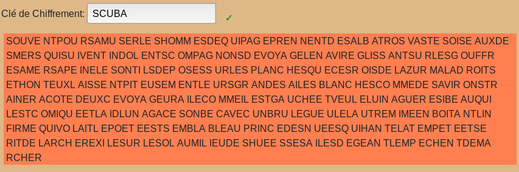

La methode de Kasiski / Babbage
Cette methode permet de determiner la longueur de la clé d'un chiffre polyalphabetique (tels que Vigenere, Beaufort, Allemand, etc...) et de pouvoir donc le decrypter en separant le cryptogramme en des colonnes égales a la longueur de la clé puis de faire une etude de frequence par colonne. Pour savoir les détails de cette methode, lire le texte ci-dessous apres le programme d'analyse.
L'histoire
On pense que le Londonien Charles Babbage ((1792-1871)) effectua la première véritable cryptanalyse du chiffre polyalphabetique de Vigenère vers 1854. En parallèle, un officier prussien à la retraite, Friedrich Wilhelm Kasiski(1805-1881) parvint au même résultat sans avoir eu vent des travaux de Babbage puisque ce dernier ne les avait pas publiés. Kasiski rédigea Die Geheimschriften und die Dechiffrierkunst en 1863 où il présentait le test qui allait porter son nom : le test de Kasiski qui permet d'estimer la taille de la clé.
Théorie de la méthode
Babbage s’est dit qu’a chaque fois groupe de trigramme (trois lettres consécutives du message chiffré) apparaissait plus d'une fois dans le texte c'est que:
- soit la même séquence de lettres du texte clair a été chiffre avec les mêmes de la clef
- soit deux suites de lettres différentes dans le texte clair auraient (possibilité faible) par pure coïncidence engendré la même suite dans le texte chiffré.
Exemple 1
Considérons par exemple le mot-clé « ABCD » qui sert à chiffrer « MESSAGER TRES MESQUIN MESOPOTAMIEN ».

Dans ce cas, il y a 12 lettres entre les deux « MFU », on en déduit que la longueur de la clé est
un diviseur de 12 (sinon la clé et les deux « MES » ne seraient pas alignés). La clé peut donc posséder
soit 12, 6, 4, 3 ou 2 lettres (avec une lettre, nous aurions un chiffrement monoalphabétique facilement
cassé avec une analyse fréquentielle). Avec un texte plus long, on découvrirait d'autres séquences qui
permettraient d'affiner le résultat et réduire la taille de la clé à une ou deux possibilités.
Exemple sur un texte plus long
Soit un texte chiffré de plusieurs centaines de caractères. Ce texte paraît a priori aléatoire et pourtant il contient des redondances intéressantes.
KQOWEFVJPUJUUNUKGLMEKJINMWUXFQMKJBGWRLFNFGHUDWUUMBSVLPS NCMUEKQCTESWREEKOYSSIWCTUAXYOTAPXPLWPNTCGOJBGFQHTDWXIZA YGFFNSXCSEYNCTSSPNTUJNYTGGWZGRWUUNEJUUQEAPYMEKQHUIDUXFP GUYTSMTFFSHNUOCZGMRUWEYTRGKMEEDCTVRECFBDJQCUSWVBPNLGOYL SKMTEFVJJTWWMFMWPNMEMTMHRSPXFSSKFFSTNUOCZGMDOEOYEEKCPJR GPMURSKHFRSEIUEVGOYCWXIZAYGOSAANYDOEOYJLWUNHAMEBFELXYVL WNOJNSIOFRWUCCESWKVIDGMUCGOCRUWGNMAAFFVNSIUDEKQHCEUCPFC MPVSUDGAVEMNYMAMVLFMAOYFNTQCUAFVFJNXKLNEIWCWODCCULWRIFT WGMUSWOVMATNYBUHTCOCWFYTNMGYTQMKBBNLGFBTWOJFTWGNTEJKNEE DCLDHWTVBUVGFBIJG
En l'analysant avec notre programme ou trouvre le resulat suivant
Suite du décryptment connaissant la longueur de la clé
On suppose que l'on sait que ce message a été obtenu à partir du texte clair
en appliquant le chiffre de Vigenère avec une clé de longueur 5. Alors, la 1ère
lettre, la 6ème, la 11ème, etc... ont toutes été chiffrées en utilisant la même lettre de la clé.
Autrement dit, elles ont été chiffrées en utilisant le même décalage de César
n va alors séparer le texte chiffré en 5 parties : la première comporte les lettres 1,6,11,... la seconde les lettres 2,7,12,...
la troisième les lettres 3,9,14,.... On trouve :
- KFJKKWMWFWSNKSKIAAWGFWYSYSJGWJAKDGMHZWGDEJWLSFWWMSSTZEKGSSVWYAEWMLWSWSDGWASKUMDMMATFXIDWWWTHWMMLWWJDWDDSAKKAWLWLJ
- QVUGJUKRGUVCQWOWXPPOQXGXNPNWUUPQUUTNGEKCCQVGKVWPTPKNGOCPKEGXGNOUEXNIUWGOGFIQCPGNVOQVKWCRGONTFGKGOGKCTGGWGJUNINEFE
- OJULIXJLHULMCRYCYXNJHIFCCNYZUUYHXYFUMYMTFCBOMJMNMXFUMYPMHIOIOYYNBYOOCKMCNFUHPVAYLYCFLCCIMVYCYYBFJNNLYMMGOOYYYYBYB
- WPNMNFBFUMPUTESTOPTBTZFSTTTGNQMUFTFORTEVBUPYTJFMHFFODEJUFUYZSDJHFVJFCVURMVDCFSVMFFUJNWUFUMBOTTBBFTEDYVPJEFTTBNFNF
- EUUEMQGNDBSEEESUTLCGDANESUGREEEIPSSCURERDSNLETMERSSCOERRRECAAOLAELNREICUANEECUEAMNANEOLTSAUCNQNTTEEHIRLLEEADNPNAR
En faisant une analyse de fréquence sur chaque partie grace a la page dédiée de le site on trouve que la lettre la plus fréquente pour la partie 1 est "W"
et en supposant que celle-ci chiffre la lettre "E" qui est la lettre la plus fréquente de la langue francaise alors
on determine le décalage servant a chiffrer cette ligne qui est la première lettre de la clé de Vigenère soit
k1 = "W" - "E"=22-4= 20="S".
On procedant de meme pour les autres parties on trouve que la cle servant à chiffrer ce cryptogramme est:
SCUBA
Le décryptment reussi nous obtenons le texte suivant :

source : Cryptanalyse du chiffre de Vigenère